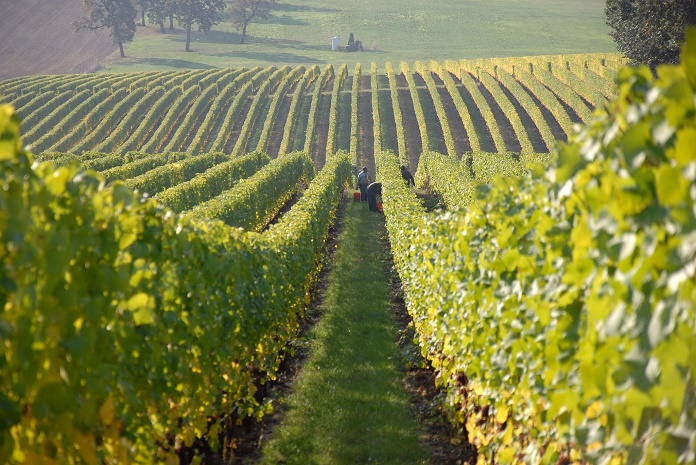
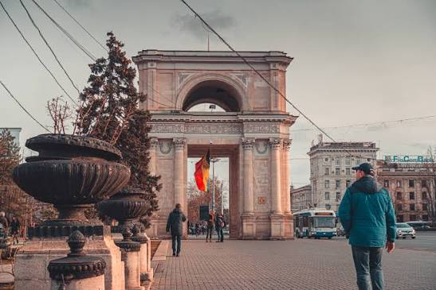
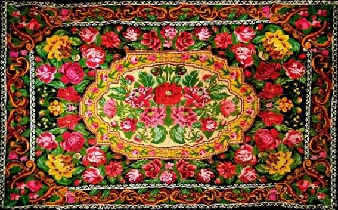

Galerie
Trei imagini, fiecare cu text alternativ pentru cititoarele de ecran.



Legături utile
- Înapoi la pagina principală (legătură internă)
- Chișinău pe Wikipedia (legătură externă)
Trei imagini, fiecare cu text alternativ pentru cititoarele de ecran.


